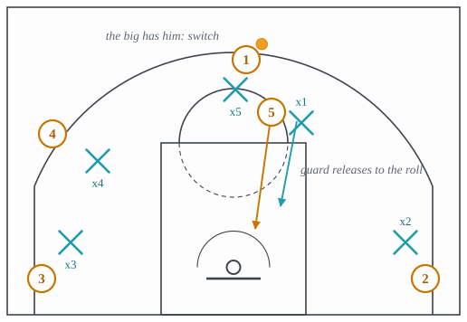

4.5: Switching Schemes
Chapter 4: Defense
Every coverage in lecture 4.3 tries to keep each defender on his own man through the screen. The switch gives that up. The two defenders in the screen trade assignments, the big takes the handler and the guard takes the screener, and the screen has produced nothing: no open shot, no roll, no help needed, and a mismatch. The whole of switching defense is the argument about whether that mismatch is a smaller problem than the screen was. For most of the game’s history the answer was no, because a guard on a big in the post was a layup. In the modern game, with fewer post players and more ball screens, the answer for many teams is yes, and a defense that switches everything is one of the era’s signatures.
Section 1 is the switch itself. Section 2 is next, the version of the switch that closes the gap a lazy switch leaves. Section 3 is the scram switch, which is how a switching defense gets out of the mismatch it has created. Section 4 is the peel switch, a switch that happens after a defender has already been beaten. Section 5 is the scheme decision, when to switch and what it costs.
1 The switch
On a ball screen, the switch is the simplest coverage there is (Figure 1). As the handler comes off the screen, the screener’s defender steps up onto him, and the handler’s defender stays with the screener instead of chasing. There is no help to send and no rotation to time, because nobody has been beaten: both attackers have a defender in front of them at every moment. The offense has run an action and got nothing from it except new match-ups.
![A pick-and-roll from the right slot. The screener stands beside the handler's defender, with the screen bar between them, touching neither. The handler dribbles left over the top of the screen. The screener's defender starts on the free-throw line and steps straight up along an arrow that ends just below where the dribble ends; the label big takes the ball sits just left of the end of that arrow, inside the arc. The handler's defender does not chase the ball: his arrow runs down beside the screener's roll toward the rim, labeled guard takes the roll. Three shooters are spaced in the two corners and on the left wing, each with a defender.](../figures/switch.svg)
What the offense has gained is the mismatch of lecture 3.11: a big guarding a guard on the perimeter, who can be driven, and a guard guarding a big near the rim, who can be posted. The switch bets that neither is as good for the offense as the screen would have been, and it is a bet that depends on personnel. A team of five players of similar size who can all guard the perimeter switches without creating a mismatch worth attacking; a team with a slow center switches him onto a guard and watches the guard drive past him.
Off the ball, switching is the same rule applied to every screen. A defense that switches the pin-downs and the flare screens of lectures 3.5 and 3.6 turns each of them into a non-event and dares the offense to score one-on-one, which is why motion offense’s counter in lecture 3.11 was a defense that switches everything.
- Assignment
- The two defenders in the screen trade men as the screen is set. The big takes the handler; the guard takes the screener. No help rotates.
- Concedes
- The mismatch, both ways: a big on the perimeter against a guard, a guard inside against a big.
- Requires
- Defenders who can guard more than one kind of player, and a call, made early and by the big, so that both defenders switch at once. A switch one man makes alone is two defenders on one attacker.
- Beaten by
- The mismatch hunted before the defense fixes it: the early seal by the big on the small defender, the isolation of the guard against the big, and the slip, which goes before the switch has been called.
2 Next: the switch the big calls
The switch’s weakness is the moment of the trade. If the guard releases his man before the big has arrived, the handler is unguarded for a step, and a step is a pull-up or a drive. Next is the switch done so that the moment does not exist (Figure 2). The guard stays attached to the handler’s hip through the screen, fighting over it as if he were going to chase, and the big waits level with the screen. When the handler comes off, the big calls the switch and takes him, and only when the big has touched the handler does the guard release and drop to the roller. Some gyms call it up to touch, which is the instruction to the guard: stay up on him until the big touches him.
![A pick-and-roll at the right slot. The handler has the ball and dribbles left over the top of the screener, who stands just above the top of the free-throw circle. The screen bar is on the screener's right side, between the screener and the handler's defender, touching neither. The handler's defender stands close below the handler on the screen side, labeled attached, not trailing. The screener's defender stands on the other side of the screener at the same height, labeled level, waiting. The other three attackers are on the left wing and in both corners, each with a defender.](../figures/next-1.svg)

Next is what a switching defense looks like when it is coached well, and the difference between it and a plain switch is invisible on a diagram and decisive on the floor. The plain switch is two defenders who each know the rule. Next is the same two defenders and one word, said by the big, at the right beat.
- Assignment
- The guard stays attached to the handler through the screen. The big waits at the level of the screen, calls the switch, and takes the handler; the guard releases to the screener only after the big has him.
- Concedes
- The same mismatch as any switch, and nothing at the moment of the trade.
- Requires
- A guard who fights over screens when he knows he will be switching anyway, and a big who calls it every time.
- Beaten by
- The slip, because a screener who never sets the screen gives the big nothing to be level with; and the ghost screen, which draws the call and then vanishes.
3 The scram switch
A switching defense creates mismatches on purpose and then has to live with them, and the one it cannot live with is a guard left guarding a big in the post. The scram switch is how it gets out (Figure 4). Before the ball is entered to the post, a bigger defender on the weak side leaves his man and comes across the lane to take the post player; the small defender who was on the post kicks out to take the man the big left. It is an off-ball switch, made away from the ball while the ball is still on the perimeter, and it has to happen in the second or two between the mismatch appearing and the entry pass. Some gyms call it a kick-out switch, from what the small defender does.
![Half court. 1 has the ball on the right wing, guarded by x5, who stands above him and to his left. The opposing big, 5, posts just outside the right block, labeled post mismatch, and the guard x1 stands above him, clear of him. x4 leaves 4 on the left wing and runs across the lane to the right side of the rim, between 5 and the basket, labeled big comes in beside his arrow. x1 runs the other way, out toward the left wing, labeled small kicks out. The two arrows cross in the lane. x2 stays at the top with 2, and x3 stays near the left corner with 3.](../figures/scram-switch.svg)
The scram is the reason switching defenses are viable at all. Without it, every switch that leaves a small on a big is a post-up waiting to happen, and the offense’s early seal from lecture 3.2 is the play built to get the ball in before the defense can fix it. With it, the mismatch lasts only as long as the weak-side big takes to arrive, and the offense that pauses to look for the post entry finds a big there.
- Assignment
- When a switch leaves a small defender on a big in the post, the nearest weak-side big comes to take the post before the entry pass; the small defender kicks out to the man the big left.
- Concedes
- The man the big left, for the length of the cross; a second mismatch on the perimeter, usually a small on a wing, which the defense prefers to the first.
- Requires
- A weak-side big who sees the mismatch as soon as the switch happens, and a small defender who leaves the post without waiting to be told.
- Beaten by
- The early seal and a quick entry, which get the ball into the post before the scram; and the skip pass to the man the big left as he crosses.
4 The peel switch
The three switches above are made before anyone is beaten. The peel switch is made after (Figure 5). A defender has been driven past, and a helper has stepped up to take the driver. The beaten defender does not chase the ball, which would put two defenders on one man and leave the helper’s man open. He peels off to the nearest open attacker, which is the man the helper just left. Two defenders have traded assignments without a screen, and the offense’s advantage, one defender beaten, has been absorbed without a rotation of the whole defense.

The peel is the cheapest recovery in the game, because it uses the one defender who is out of the play, the beaten one, to fill the hole the help created. Its cost is that the helper is now on the driver and the beaten man is on a shooter, which may be the wrong way round for the defense’s personnel. Most teams accept that for the rest of the possession and fix it at the next dead ball.
- Assignment
- When a defender is beaten off the dribble and a helper takes the driver, the beaten defender peels to the open man the helper left instead of chasing the ball.
- Concedes
- A mismatch for the rest of the possession, and a beat on the helper’s man while the peel arrives.
- Requires
- A beaten defender who gives up on the ball at once. Chasing feels like effort and is the mistake.
- Beaten by
- The kick-out thrown before the peel arrives, and a helper who steps up late, so that the driver has the layup before anyone has switched.
5 Switch what, and when
The scheme question is not whether to switch but which screens. A common arrangement switches every screen between players of similar size, one through four, and keeps the center out of it, playing drop or at the level when he is the screener’s defender. A more aggressive one switches everything, five included, and lives on the scram switch to clean up. The most conservative switches only late in the shot clock, when there is no time for the offense to hunt the mismatch it has been given, and only off the ball, where a switch costs nothing.
Whatever the rule, the switch changes what the defense concedes from a shot to a match-up, and a viewer can tell a switching defense from a non-switching one by watching what the offense does after a screen. Against drop or hedge, the ball moves: the roll, the pocket pass, the kick-out. Against a switch, the ball stops, and the handler looks at the man in front of him and decides whether he likes what he sees. The isolation of lecture 3.11 is the offense’s answer to switching, and a game between a switching defense and a mismatch-hunting offense is a game of one-on-one with eight spectators.
The idea to carry into lecture 4.6 is that switching is the furthest man-to-man can go while still being man-to-man: every attacker has a defender, even if it is not the one he started with. The next step is to stop assigning defenders to attackers at all, and that is the zone.